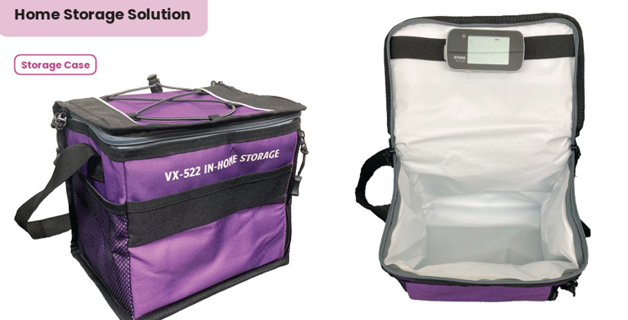

Home Storage Case (HSC) for Cold-Chain Drug Delivery
Combined human factors engineering with thermal validation to help patients store temperature-sensitive biologics correctly in domestic refrigerators (target: 2–8 °C).

Overview
At-home refrigerators have hot spots, defrost cycles, and door-opening spikes that can push therapies outside the 2–8 °C range. Usability issues—like where patients place the case, how they load it, and how often the door opens—are just as impactful as the device design. This project integrates use-related risk analysis (URRA), IFU/labeling improvements, and instrumented thermal testing to produce a storage accessory patients can use correctly the first time.
My Role
- HFE lead for task analysis, URRA, and IFU/quick-start content.
- Test engineering: thermocouple layout, data logging, and acceptance criteria definition.
- Statistics & analysis in JMP/Minitab; DOE setup and reporting.
Problem → Approach → Outcome
Problem: Temperature excursions driven by fridge variability and foreseeable use errors (placement, loading, door-open dwell).
Approach: Mapped the end-to-end user journey (unbox → load → place → monitor). Built a URRA linking hazards to mitigations (design affordances, placement cues, and IFU revisions). In parallel, executed a five-test thermal suite with instrumented HSC and controlled scenarios.
Outcome: Drafted updated IFU/quick-start with explicit placement guidance and “do/don’t” visuals; created traceability from hazard → mitigation → test → acceptance. Bench results showed improved time-in-range across door-open and power-outage simulations. (Insert your actual metrics below.)
Test Matrix (Thermal Suite)
- Trapped hot air (initial load & equilibration)
- Stability (steady-state shelf location & loading levels)
- Door-opening (frequency & dwell sensitivity)
- Power-outage (warm-up profile & recovery upon restore)
- Defrost cycling (periodic spikes & damping)
Design & HFE Highlights
- Clear placement cues and labeling to reduce cognitive load and errors.
- Thermocouple layout for core vs. ambient mapping; logging cadence tuned to capture door events.
- Acceptance criteria aligned to product stability needs (time-in-range, peak excursion, recovery time).
- URRA + FMEA with actionable mitigations suitable for formative and summative evaluation.
DOE & Analysis
Factorial screens across shelf position, load mass, door-open interval, and ambient fluctuations. Primary responses: % time within 2–8 °C, max excursion, and recovery time. Effects and interactions summarized via ANOVA; tolerance intervals computed for worst-case guidance.
Results (human-factors–driven scenarios)
- Out-of-fridge placement (10 min) → re-equilibration: 4.3 °C → 7.4 °C (+3.1 °C), returned to ~4.3 °C within ~3 h.
- Fridge door slightly ajar (~3 in) for 60 min: 3.9 °C → 5.8 °C (+1.9 °C).
- Brief openings (15 s every 15 min for 2 h): 4.3 °C → 5.0 °C (+0.7 °C) → back to 4.3 °C.
- Power outage (unplugged 3 h): 4.0 °C → 5.6 °C (+1.6 °C), then declined after power restore.
Overall: All scenarios stayed within the 2–8 °C target range. Largest rise (+3.1 °C) occurred during out-of-fridge exposure and required ~3 h to re-equilibrate; door-ajar and power-loss produced smaller excursions; frequent brief openings had minimal impact.
HFE link: Scenarios map to observed user errors and foreseeable misuse, enabling clear IFU mitigations and recovery guidance.